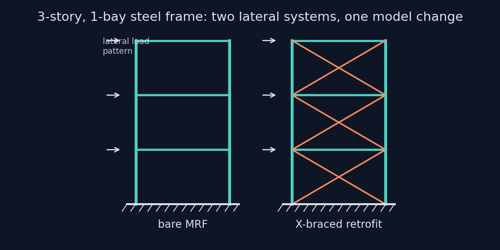
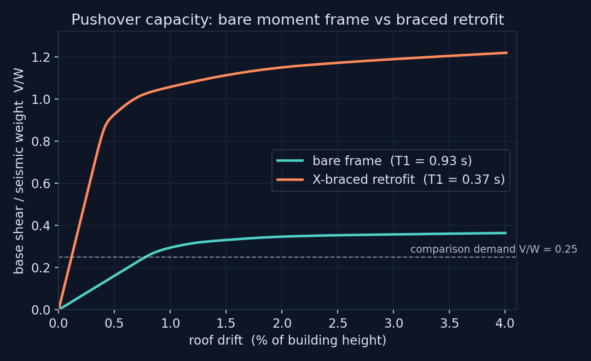
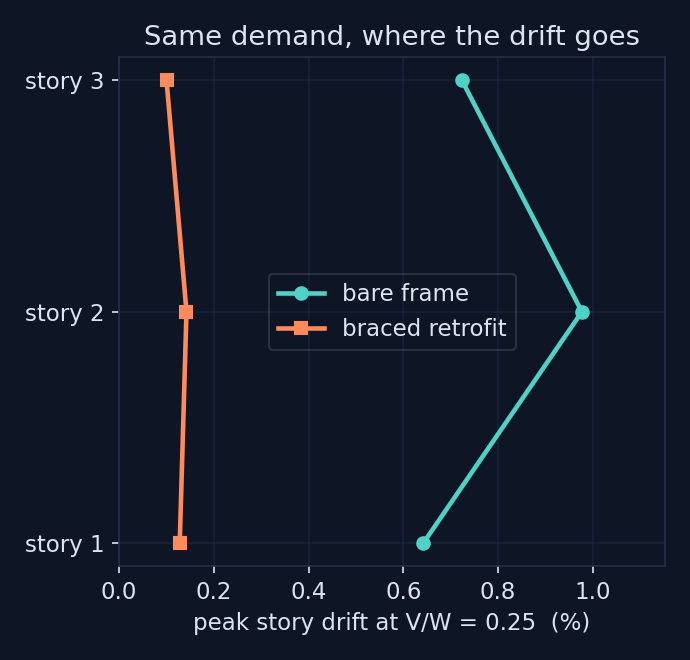

0.36 → 1.22
PEAK V/W
A 3-story, 1-bay steel moment-resisting frame in OpenSeesPy: fiber sections with Steel02, distributed plasticity, P-Delta columns, and a displacement-controlled pushover to 4% roof drift. Then one model change, an X-brace retrofit, and the same analysis again. The comparison is made where it is meaningful, at equal base-shear demand.
Three stories at 3.5 m, one 6 m bay, plate-built I-sections: 400 mm deep columns and 450 mm deep beams proportioned for a strong-column weak-beam ratio near 3. Members are forceBeamColumn elements with five Gauss-Lobatto integration points and fiber sections using Steel02 at Fy = 345 MPa with 1% kinematic hardening, so yielding spreads through depth and along length instead of being pinned to a hinge location by assumption. Columns carry a P-Delta geometric transformation. Seismic mass is 30 tonnes per node, a total weight of 1766 kN.

One modeling detail earned its own regression check. OpenSees bends 2D fiber sections about the section y axis, so the fibers must be distributed along the local z coordinate to represent depth. Getting that orientation wrong does not crash anything; it silently drops the section stiffness by an order of magnitude and hands back a frame with a 4.4 second period that looks plausible if you are not checking. The model validates its periods against hand-calculated stiffness before any pushover runs.
The pushover applies an inverted-triangular load pattern under displacement control with adaptive substepping to 4% roof drift. The bare frame peaks at a base shear of 0.364 W with an idealized bilinear ductility of 3.5. The braced frame is a different structure: 2.5 times stiffer by period ratio, peaking at 1.218 W with ductility 7.1, the diagonals carrying load the moment frame previously took in flexure.

Raw capacity curves invite a misleading comparison, because at equal roof drift the stiffer structure is being pushed far deeper into its response. The honest question is what each frame does under the same load. At a common demand of V/W = 0.25, the bare frame concentrates 0.98% story drift in story 2; the braced frame holds the same story to 0.14%. That is an 85% reduction in the quantity that actually damages buildings, at the demand level both structures can be asked to carry.

| Quantity | Bare MRF | X-braced |
|---|---|---|
| Fundamental period T1 | 0.934 s | 0.367 s |
| Peak base shear V/W | 0.364 | 1.218 |
| Idealized ductility | 3.5 | 7.1 |
| Peak story drift at V/W = 0.25 | 0.98% (story 2) | 0.14% |
This is computational mechanics on a structural benchmark, presented as such. The braces are corotational truss elements with symmetric tension-compression response, so compression-diagonal buckling is out of scope; a design-grade retrofit study would use an inelastic buckling brace model and cyclic loading. The frame is planar, the load pattern is fixed rather than modal-adaptive, and no code checks are claimed. What the project demonstrates is the OpenSees modeling itself: fiber discretization done correctly, distributed plasticity, geometric nonlinearity, a solver that recovers from non-convergence by substepping, and results reduced to the comparison that is actually fair.
pip install openseespy numpy matplotlib
python src/run_pushover.py # both frames, ~1 min
python src/make_figures.py # capacity, drift, schematic